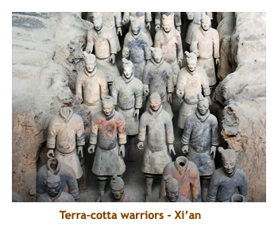

[ Home ] [ Travel ] [ Photography ] [ Pets ] [ Games] [ Rowing] [ Physics ]


A Visit to Mainland China - Part 2
Travel
Cruises
Past Cruises (Diaries)
Future Cruises
Rogues Galleries
Land Trips
Diaries (Land Trips)
Hawai'i - Big Island - 04'01
Hawai'i - Maui - 05'02
Hawai'i - Big Island - 04'03
Hawai'i - Kaua'i - 09'04
Hawai'i - Big Island - 04'06
Hawai'i - Maui - 04'06
Mainland China - 05'07
Phoenix, Arizona - 12'07
Greek Isles - 05'08
Hawai'i - Kaua'i - 09'08
Hawai'i - Big Island - 09'09
Hawai'i - Maui - 05'12
Hawai'i - Big Island - 04'13
Ireland - 08'13
Mexico - Cancun 11'13
France/Belgium/Lux 07'15
Hawai'i - Big Island - 05'17
England / Wales - 06'17
Hawai'i - Big Island - 09'19
Photography
Cameras
Underwater
Pets
Tara
Blackie
Whitey
Muffy
Ollie
Rusty
Fluffy
Rufus&Dufus
Games
Rowing
Physics
Day 9 (May 13) - A Day in Qufu and Tai'an
Today was to be a scorcher. It was 34 degrees and humid. I needed ice in my backpack!
We were up at the usual time today for Chinese food and fruit (you know the routine by now). Luggage was picked up at 8 AM and we were on the bus at 8:30. We were leaving Ji'nan and travelling south to Qufu - home of Confucius and his decendents (right up to the 1900's). Confucius was born in 551 BC and his writings/ philosophy have played an enormous role in Chinese history and religion. Today he is highly revered. His name is Anglicized and is actually Kong Fuzi (Master Kong), so his family name is Kong.
The bus trip was just over 2 hours. We drove through some moutainous terrain
and the land was terraced for farming. Every scrap of arable land is in use. Qufu
is a tiny village of only 160,000 people. It is a very poor area with rundown
buildings and basic living conditions. There were few buildings more than 2
stories high. The old part of Qufu is a walled city, so we had to drive through a tunnel
in the wall to get in. We parked and walked a long street lined with street vendors
(over 100 stalls!). Qufu is a Chinese pilgramage destination much more so than
a foreign tourist destination. It was interesting seeing souvenir stalls aimed at Chinese
pilgrims rather than non-Chinese tourists.
Our first visit was to the Confucius Temple. We weren't the only important people to visit it, 12 emperors had visited before us. The site is a series of memorial gateways, courtyards, stele pavillions and temples spread out over an area of 140 thousand square meters. It is 1.3 kilometers long from north to south. Considered the oldes temple in China, it started as a shrine in 478 BC, but has been built up since, especially during the Ming Dynasty. Inside are about 200 stome stelae listing the names of over 50,000 successful candidates in the imperial examinations during the Yuan, Ming and Qing dynasties.
A long succession of gateways lead to the 11th century Kuiwen Pavilion.
The Apricot Pavilion dates back to the original shrine and is where
Confucius instructed his disciples.
The Hall of the Sage's relics houses carved stone plates with scenes from
Confucius' life. The Lu Wall is where one of his descendents hid his writings
from Emperor Qin Shi Huangdi, who wished to burn them. (The books
were rediscovered in the Han era.)
Then we walked to the nearby Confucius Mansion. Although Confucius lived an austere life, his descendents (the Kong family, also known as the First Family Under heaven) became very rich and powerful. They built a palatial mansion occupying over 40 acres. Arranged on a traditional north-south axis, the mansion is divided into residential and administrative quarters, with a temple in the east and a garden at the rear. Most of the buildings date from the Miing era.
It was now lunch time, so we braved the souvenir gauntlet and headed to a nearby hotel for lunch. Today's lunch was Chinese food. We had a Chinese band and some dancers entertain us during lunch. The small trumpet had a very piercing sound, but the other instruments were more serene. Very nice!

After lunch, we drove to another park known as the Confucius Forest. This is a cemetery where Confucius, his son, his grandson and hundreds of the Kong clan are buried. It was certainly humbling to see the grave of Confucius himself considering the impact he has had on China, Japan, Vietnam and Korea.
Then we headed back on the bus (about an hour) to head to the town of Tai'an at the base of Mount Tai (Tai Shan) which is China's most holy mountain. There we checked into our hotel - a Ramada. Once again the hotel is awesome - a study in comfort and high tech. The hotel is 9 stories, but for some reason, the elevators each seem to do only 3 or so floors. I'm on the 7th floor and have to change elevators on the 3rd floor to get there. To get to 9, it requires a 3rd elevator. Weird!
For dinner, we drove a short distance to another hotel. It's funny that every restaurant we've been to is huge (serves about 100 to 200 people) and we're always sent up to the second floor. Must be a group thing. This time we had Chinese food. It was excellent once again. Apart from the steamed rice, I don't think we've had 2 dishes the same.
We arrived back at the hotel about 9 PM. Time to
write up my journal and get to bed.
Day 10 (May 14) - On top of Mount Tai, Ji'nan to Xi'an
Today will be a scorcher - supposed to hit 34 or 35 degrees. We were up early for the
usual breakfast. The breakfast area is usually very quite at 6:30 AM, but today it was
packed (mostly Chinese). All those pilgrims want to get an early start on Mount Tai.
We were on the bus by 8 AM and drove to the base of the mountain range. This is a
group of 5 holy mountains, of which Tai Shan ("shan" means mountain) is the highest
and most holy. It has been a holy place since antiquity and has been climbed by the
likes of Confucius (550 BC), 1st Emperor Qin Shihuang (220 BC) and Mao Zedong (1960).
At the base of the range, we transferred to a shuttle bus which took us to the gondola on
Tai Shan. The gondola ride was great and took us up near to the summit at 5,000 feet.
There is a trail of steps (6,000 +) that you can climb instead of taking the gondola, but this
takes 6 to 8 hours. The gondola was about 15 minutes.
Once at the top we wandered several kilometers of walkways and steps taking us through temples of many different religions - Daoist, Buddhist, etc. It felt very much like being in Tibet (although I've never been there) with the buildings perched on the mountain top. Even though we were high up, the temperature was still very hot. There were cherry trees all over and they were in full bloom. (They might have been crab apple trees). There were lots of people everywhere, mostly Chinese.
One interesting custom at a number of religious sights is a place to secure an engraved
padlock amongst hundreds of others. The locks are engraved with the names of loved ones
and may include a message as well. Our Professor located the lock he had placed there on
a previous trip. We also saw lots of people burning incense. Some of the incense sticks
were huge - 3 or 4 feet long and a couple of inches in diameter.
After decending in the gondola, we were shuttled back to our bus. The shuttle route is along a mountain stream and quite pretty. Then we bused back into Tai'an for lunch - Chinese food! This was the same restaurant that we hit the previous evening for dinner, the first time we have repeated restaurants.
After lunch we went to the Dai Temple, located
in Tai'an city at the southern foot of Tai Shan. This
is the third most holy temple in China, the 1st and 2nd being the Temple of Heaven and
Temple of Earth in Beijing.There were lots of shade trees at the temple grounds which
everyone liked. They turned out to be ancient trees including the cypress trees of the
Han dynasty (206 BC - 220 AD) and the scholar trees of the Tang dynasty (618 AD - 907 AD).
Like other temples we had visited, there were many courtyards, gates and temples.
The main temple, the Tiankuang Dian, is an immense yellow-eaved hall that contained a
massive Song dynasty fresco depicting the Zhengzong emperor as the God of Tai Shan.
Then it was time to return to Ji'nan to catch our flight to Xi'an. Our bus in Shandong (Qingdao, Ji'nan, Qufu and Tai'an) was not as nice as the bus in Beijing. It had less legroom and the A/C didn't work all that great. Our 3 hour drive to the Ji'nan airport was hot and sweaty, not to mention bumpy and noisy.
We arrived at the airport at about 5:30 PM and our flight was at 7:30. Our organizer had preordered PIZZA!!!! for all to be eaten while we waited for our flight. It was from Pizza Hut and was quite good. However, I was starting to get rice withdrawal symptoms.
We landed in Xi'an about 9 PM and had a 1 hour drive to our hotel (remember, these
are huge cities). On the bus we met our new local guide Leo.
Once again the suburbs of this city are decrepit and crumbling (slums?)
and things get newer and bigger as you approach the center of the city. Our hotel here is
the Hyatt Regency and is quite nice, but not as new or fancy as our other hotels have been.
It was 11 PM by the time my head hit the pillow ready for an early departure to see the
terra-cotta warriors.
Day 11 (May 15) - Warriors in Xi'an
Xi'an is a very interesting city in the province of Shaanxi. It was the ancient capital of China during the Qin Dynasty (221 BC - 206 BC) and several later dynasties / periods. The city is a "walled" city with a very thick and tall wall surrounding what is now the central core of the city. Xi'an is the Chinese terminus of the ancient "silk road". As a result, Xi'an is quite international, and has a large Muslim population.
We were up for our usual 6:30 breakfast and then off on the bus at 8 to the home of the
terra-cotta warriors. It was about an hour's drive from the hotel. We got there quite early
and also were approved for the VIP entrance right by the main excavations. Being one
of the first buses there, we had the place to ourselves. The site is really huge and the
building housing Pit #1 is massive.
 The tomb was created by the first emperor of China, Qin Shi Huangdi, in 200 BC. He had 700,000 workers who laboured for 36 years digging the pits for the soldiers, molding the bodies and sculpting the heads, etc. The site was (re)discovered in 1974 by a farmer drilling a well. The main excavation covers 16,000 square meters and about 7,000 soldiers and horses have been excavated so far. Thousands more remain buried.
The largest display is Pit #1 protected within a huge aircraft hanger-like building.
The trenches containing the soldiers have long since collapsed, crushing the soldiers
and horses within. The excavations entail removing the collapsed dirt and recovering
the broken pieces of the terra-cotta statues.
Numerous soldiers have been repaired and replaced to their original positions in the
trenches. Another area (called the terra-cotta hospital) contains ranks of soldiers and
horses in the process of being repaired. The enormity of the display is quite overwhelming.
We also visited pits 2 and 3, which are under active excavation as well. one'of the pit buildings
had glass cases you could walk right up to, with examples of terra-cotta soldiers. Also on
display were the 2 half-size "horses and chariot" sculptures. Of course there was
a gift shop / book store where we met the actual farmer who discovered the site. He was
signing a very nice souvenir booklet about the warriors. I had to buy one!
After viewing the 3 excavations, we reboarded the bus and headed back into town for
lunch - Chinese food. After lunch we drove a short distance to the Shaanxi History Museum.
It is one of the finest museums in China documenting the art, culture and lifestyles of the groups and
dynasties from 10,000 BC through to the end of the Qing Dynasty (1912). The museum was
excellent and was very easy to walk around to view the exhibits. There are over 370,000
relics, but not all of them are on display. The 4 main exhibit halls are arranged by
period or dynasty. Walking through time, it was obvious how the art and technology
progressed from period to period. There was a great display of terra-cotta soldiers, and the
2 famous half-size bronze "horses and chariot" sculptures. The same sculptures were on display
at the orignal site, and I can't remember which were the original and which were
copies. We spent about an hour or so wandering through the museum.
Then we drove another short distance to the Great Goose Pagoda (aka the Wild Goose Pagoda or the Large Goose Pagoda). This 8 story Buddhist temple was built in 652 AD during the Tang Dynasty and is attached to another temple called the Ci'en Si. Known as the Dayan Ta, the pagoda was built in memory of the Gaozong emperor's mother, Empress Wende.The monk Xuanzang, who travelled to India via Central Asia and returned with bundles of sutras, officiated at the temple, translating the hundreds of scriptures from Sanskrit into Chinese.The 210 foot high pagoda was built on his orders to store the documents. Touring with us were about 20 Tibetan (?) monks in yellow robes. This added some character to the temple grounds, although some of the monks were sporting digital cameras.
We returned to the hotel at 5:30 PM and had 1 1/2 hours to relax and clean up for dinner at 7.
Dinner was at another Chinese restaurant and was very good. We have beer with every
meal and it's excellent. We have also had wine a number of times for various reasons, and
it takes some getting used to. They have a ways to go to develop some quality wines.
About 10 of our class abandoned the bus halfway home to visit a night market (at 9 PM).
I would have gone, but after a late night last night, I was tired and wanted to get to bed.
Day 12 (May 16) - Xi'an to Guilin
Pedestrian etiquette: Pedestrians and bicycles are everywhere in China. Intersections (some of them huge) have no discernable markings for pedestrian travel. Jay walking is not punished but praised. If traffic is clear in one direction people run (or bike) out to the center of the street and stand on the center line waiting for the other side to clear. Today we were on a 4 lane street with a bus coming toward us in the inside lane, and our bus also in the inside lane. Our buses passed less the 2 feet apart and there were people standing on the center line between the buses!! Crazy!
This morning was to be a sleep in day as we weren't getting going until 10 AM.
However I still woke up early and did my usual 6:30 breakfast. I was surprised to find
a lot of our group up early too. After breakfast I debated going for a walk around town,
but decided to check out the fitness center instead. It was quite nice, so I ended up
doing a 40 minute workout. Then it was back to my room to cool down and read up on
Guilin. By the time I had cooled down and showered, it was time to take my luggage
down for the 10 AM pickup.
We climbed aboard our bus and headed to the Muslim area of town. Back in the days of Marco Polo and the ancient Silk Road (now the Polyester Road), a lot of Muslims settled in Xi'an. Today, their descendents make up the largest ethnic minority in the city. They look mostly Chinese, but they practice Islam and have a mosque (that looks like a Chinese pagoda). Walking through the inevitable souvenir stall gauntlet was a treat as these people were much more restrained sales people and actually allowed you to look at their stuff without bugging you. It was very interesting seeing the mosque and grounds, and trying to spot the Muslim influence among the traditional Chinese architecture.
After the mosque visit, we went to a nearby Muslim restaurant. Everyone was expecting
Turkish or Mediterranean fare, but Muslim is a religion, not a location. Hence, the food
was very Chinese, just replace pork with lamb. It was quite good though.
Then it was off to the airport. On the way we saw two different statues honouring the start of the Silk Road. We also passed several burial mounds of emperors from the Western Han Dynasty (206 BC to 9 AD). Our flight to Guilin was delayed by 1/2 hour or so, but we finally took off at 4:30. We arrived in Guilin just after 6. Boarding the bus into town, we met our new local guide Jesse.
Guilin is completely different from the northern cities we had visited. We were now in rice paddy country. I saw my first water buffalo, walking beside an old lady wearing a conical hat (the lady, not the water buffalo). The "karst" mountains are sharp peaks rising straight from the vally. This is the China seen in the paintings and National Geographic photos. Beautiful! Guilin has a population of 700,000 and welcomes about 6 million visitors each year (90% of them native Chinese). It is very much a tourist city. The two draws are the stunning landscape and the beautiful Li River (which we will cruise tomorrow). The name Guilin means "Osmanthus Forest" and the streets are lined with sweet-scented Osmanthus trees.
We stopped at a nice restaurant for dinner (Chinese food) and then continued
on to our hotel. On the way we passed a huge night market. No one seemed up to
heading to the market (too late), so maybe we'll hit it in two days when we return to
Guilin. Our hotel is a Sheraton, and it is very swank. So, here I am on the old laptop
again pounding out another trip report.
Day 13 (May 17) - Down the Li River to Yangshuo
We were ready for a short round trip. The plan was to cruise down the river to Yangshuo, ansd then return the next day. Seeming as we were going to be back in Guilin tomorrow at the same hotel, we decided to travel light to Yangshuo, so I left my laptop behind. I would have to rely on my memory until we got back to Guilin.
We were up early for breakfast (the usual) and had to sort our bags by 7:30.
We were taking some stuff with us, and some we were leaving at the hotel. At least
that was the theory. I also
took the opportunity to use the "all you can stuff in one bag for 100 Yuan ($15 Cdn)"
laundry service. I had t-shirts, socks and underwear that needed cleaning. The only
challenge was getting them to wait a day and deliver it when we returned. I didn't
want then delivering my laundry to the new tenants of my room tonight! The
girl at the front desk assured me that everything would be just fine. All right!
We headed out on the bus at 8 AM. Guilin is generally very hot, but we hit a couple of cool rainy days. It was 24 degrees, overcast with occasional light rain. We arrived shortly at the boat dock on the Li River. There were a dozen or so passenger boats at the dock and we boarded one of the newer ones. We were sailing for about 4 1/2 hours from Guilin to Yangshuo. The scenery was spectacular. The karst mountains rise directly up forming sharp peaks. Along the banks we passed farms with water buffalo and white ducks or geese. The farmers were wearing the conical hats and carrying loads on yokes - just like the pictures that you see in travel magazines. The passenger boats moved along as a group - about 6 million tourists do this trip every year (most of them domestic Chinese). Lunch was served on the boat and was an "alright" buffet. The rice was good, but some of the other dishes were marginal.
At some point on the cruise we were offered some snake wine. The wine
bottles actually had two or 3 dead snakes inside. This is a specialty of
the Guilin area. I've never seen this wine at Willow park Liquor Store!
Needless to say, I didn't try it.
We arrived at Yangshuo around 1:30 and walked to our hotel. The town is one big tourist trap. Every street is lined with vendors selling souvenirs and knock-off watches, clothes, etc. We were given the rest of the afternoon to check out the town. Yangshuo is a small town of only 60,000 people, and only recently has become a tourist town. There is not much development there yet. Our hotel was so-so and was the best in town! Oh well, our other hotels have been fabulous.
We headed off to dinner at 6:30 and, as a treat, we went for Western food.
Everyone was excited. However, the food (sampler of salad, pizza, spaghetti,
steak and fries) was mediocre to poor at best and everyone was wishing for
Chinese food before we were done. We did get Chinese beer though, and it
was great. We've had many different brands of beer now and they have all
been excellent. They have all been very similar in taste - light and not bitter.
The Tsing Tao beer imported into Canada is very close in taste (or identical).
After dinner, we were taken to a local tourist show highliting the traditions of China's culteral minorities. It was called "Impressions: the Story of Liu Sanjie". It is an outdoor show and there is seating for 3,000 people. We didn't expect much, and were we suprised. The show was absolutely phenomenal. It is staged on a lake with the huge mountains in the near background. It was pitch dark when the show started. The show started with a lady on a small boat singing a traditional song, which bright spotlights on her. When she was done, special lights lit up the surrounding mountains. Then about 100 children in costumes strode out along the bank with flaming torches, singing. Then from out of nowhere 150 men on bamboo rafts (the small ones like tiny gondolas) appeared with torches, paddling across the lake. Number after number featured huge groups of men, women and children all in beautiful costumes, some costumes even lighted with small light bulbs. The lighting and special effects was spectaculer. At one point, a group of men herded a group of water buffalo along the shore. After the show, our guide explained that the show has run since 2003 and features over 600 men, women and children, all from nearby villages. The man who created the show (Zhang Yimou) is a famous director of Chinese films and is the same one who has been hired to produce the opening and closing celebrations for the 2008 Beijing Summer Olympics. Sorry I ranted on about this show, but it is the best live show I think I have ever seen. Others in our group were equally enthralled.
We got back to the hotel close to 10 and that was that. Tomorrow we drive
back to Guilin on the bus, paralleling the Li River.
Day 14 (May 18) - Back to Guilin
This morning we woke up to pouring rain. It was going to be a rainy day with temperatues of about 23 degrees. Breakfast was very crowded. The town is really struggling to handle the huge volume of tourists. I bet the town looks quite different in 2 or 3 years! I took the opportunity for a last walk around town while waiting for the bus. Even though is was quite early, there were lots of people bustling around. There was a small river and pond near the hotel. An old man was on a bamboo fishing raft with two cormorants. He had a traditional reed overall and reed hat. For 5 yuan you could take his photo. This was a very interesting town.
We boarded the bus about 8:30 and headed out for a countryside tour.
We headed through farmland (mostly rice paddies), with ramshackle farm
houses, old farm trucks, water buffalo, etc. It was too bad with the rain as the
bus windows steamed up on the inside and streamed rain on the outside,
so it was very difficult to see out.
However, we did make some photo stops along the way and even visited a typical farm house which we got to walk through. Very basic living here! China in the city and China in the country are two totally different lands. The house had several rooms including an outdoor sleeping area. The main room was complete with a large poster of Chairman Mao and a small, flat screen TV. The two elderly gentlemen who lived there accompanied us on the tour and seemed very proud of their house. As we left the house there were several ladies selling handicrafts.
Next we stopped in a small settlement by the river with a stone bridge
crossing the water. There were a number of wide bamboo rafts with deck chairs
ready for customers wanting a float down the river. I suspect the rain was
keeping any customers away. I can't remember why we stopped here, but it was
interesting.
Then we drove back to Guilin. The boat trip on the Li River took 4 1/2 hours, but by road the trip is only 1 1/2 hours. Once again we passed farmlands, rice paddies, water buffalo and rusty old farm vehicles. We were back in Guilin in time for lunch. This time it was Chinese and it was great. The Chinese are very good at Chinese food!
After lunch we took a short drive to the Reed Flute Cave
(Ludi Yan). It is a huge cave
system running into one of the limestone mountains
(Guangming Hill). They have built a
wonderful walkway through the caverns and have special coloured lighting
that very effectively highlites the walls and ceilings, stalactites and stalagmites.
There were several shallow pools with amazing reflections. We all really enjoyed
the tour. Then it was back to our hotel for a couple of hours of free time. The
rain had let up by now and it was quite pleasant out. Even better news was
that the hotel had my laundry set aside for me, all washed and clean!
About 6:30 we headed off for dinner at a Chinese Restaurant. Pretty well all of the restaurants we have been to so far have had 2nd floor dining for groups. Tonight we were put in a V.I.P. room. I think they just thought we were going to be noisy! Another great dinner. After dinner a group of 7 of us headed out to the night market. It was huge and packed with lots of people. We came upon a huge plaza surrounded by large hotels and office buildings. One hotel was featuring a waterfall show. The building (the Lijiang Waterfall Hotel) was about 10 stories high and very wide. Water was pouring off the roof across the entire width of the hotel and cascading down 10 or more stories. It was amazing. Crowds of people were out to watch it. At 9 PM the water turned off and the show was over. A group of about 10 or so 12 year old kids came up to us to practice their English. They were studying English at school and their homework included getting out and talking to real English speaking people. They were the nicest kids and spoke quite well. They asked us all about Canada, our families and our trip to China. We have met so many people whose faces light up when we smile or say "Hi" to them.
By the time we headed back to the hotel, it was just Marni, Donna and myself.
Needless to say we got lost. We were only a block away from the hotel, but weren't
sure how to get there. We stopped into a small shop and the girl gave us directions.
We were back to the hotel by 10. Time for bed. Tomorrow is a free morning, more
local sightseeing and then we fly to Hangzhou. Another travel day!
Day 15 (May 19) - Guilin to Hangzhou
Chinese fitness: Every morning and evening, a large number of Chinese (mainly the older generation) gather in parks, squares, even highway underpasses to participate in Tai Chi and other exercise programs. Ballroom dancing is also very popular and you see groups of people on the sidewalks, or wherever doing ballroom dancing. I think that's why you see so few overweight Chinese people (in China).
We are still in Guilin where it is overcast, but 30 degrees and very humid! I was
up at my usual time this morning, even though we didn't have to report in until 11 AM.
I hit the restaurant at about 6:45 and actually met 2 other classmates there. No one
else appeared. After breakfast, my good friend Donna and I headed out for a walk
along the riverfront promenade - a wide walkway with gardens and sculptures.
We passed some Tai Chi folks, a group exercising with fake swords, and a large
group doing ballroom dancing. They all smiled at us as I took their pictures. The
fruit bicycles were out in force too (bicycles with wooden platforms on the back
loaded with lichees, mangos, bananas, etc). It was a lovely walk along the river.
We met back at the hotel at 11 AM and boarded the bus for some touring. It was quite warm with the humidity. We did some sites within Guilin. The first site we hit was Elephant Trunk Hill (Xianghi Shan) which was like Pierce Rock in Quebec. It resembles an elephant who has placed its trunk in the Li River waters for a drink. Along the rivers edge was a local business women with an extra wide bamboo fishing raft (10 bamboo floats rather than the usual 5) that would support unsteady foreigners. She allowed tourists to stand on the raft with the cormorants on their shoulders for a photo session.
Then we visited
nearby Fubo Hill (Fubo Shan). This is a tall yellow rock rising from the river.
It is believed to calm the rough waters below, hence its name "Wave-Subduing Hill".
There is a steep path to the summit where a crumbling temple is located.
The temple houses a huge bronze bell and several hundred buddha images from the
Song era. At the base of the hill is a small cave system where some buddhist
carvings and religious items can be found. The gardens surrounding the hill were
especially nice, with some very large shrubs sculpted to look like a family of elephants.
Then we went to lunch at a Chinese food restaurant. It was excellent. Then it was off to the airport for our flight to Hangzhou. We had time to spare, so the bus driver diverted to a pearl factory. We were shown how pearls were grown and harvested, and the difference between salt water and fresh water pearls. The showroom featured all types of pearl jewelry - white, pink, black and mixed colours. The necklesses that I looked at were about 18,000 yuan and up ($1300 Cdn), so I didn't buy one.
We hit the airport at 3:45 and immediately boarded the airplane.
Our luggage had been
transported by truck earlier and was all checked in. It was nice not to
have to wait around for the flight. I don't think this would be allowed in
North America where you have to be with your checked in luggage all the
time.
An hour and a half later, we were in Hangzhou. Hangzhou was the capital of China in the Southern Song Dynasty (1138 - 1279). Marco Polo visited Hangzhou at the height of it's prosperity. At the time it was the largest and richest city in the world. It is now a bustling sea port with a population of 6.5 million. Hopping on the bus we met our new local guide Yvonne. I find her quite difficult to understand.
The architecture here is very different than other cities we have visited. In the outskirts, there are large square plots of farmland surrounded by western looking condos. I don't know what the buildings remind me of, but certainly not Chinese. It was after 7 by now, so we headed directly to our restaurant. You may have gathered from earlier entries that we have been thoroughly enjoying the food (well, almost all of us - there's always someone who doesn't like the food). This was the first restaurant that everyone was disappointed in. Although the place was huge, it was packed due to a wedding party. The music and noise was so loud we could hardly talk to one another. The tables were dirty and the food was really bad. I hope this isn't typical for this area of China.
Then we headed to our hotel for the night. It is the "World Trade Center
Grand Hotel" and it is beautiful. And, it has free internet. (That's the 5th hotel
that has had free internet in the rooms).